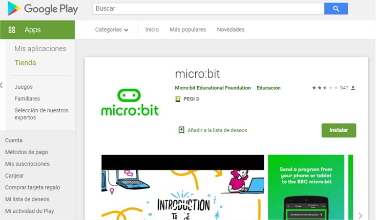
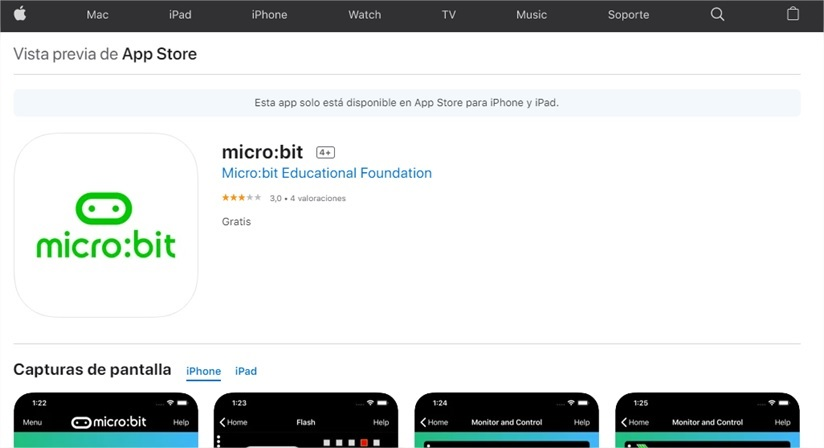
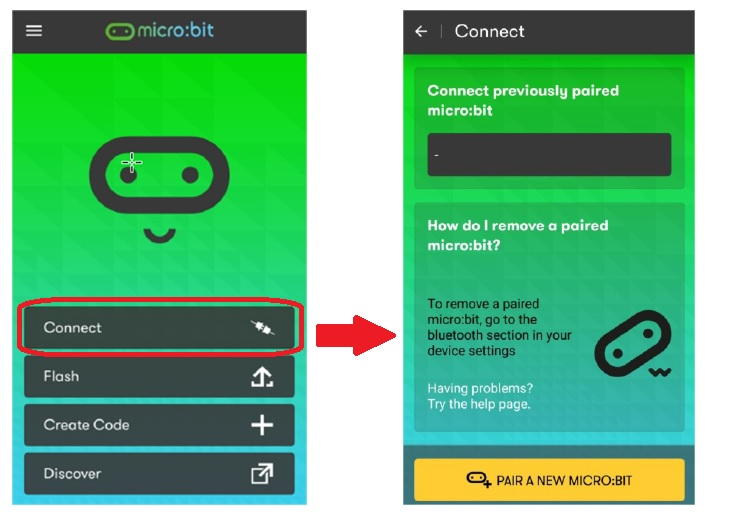
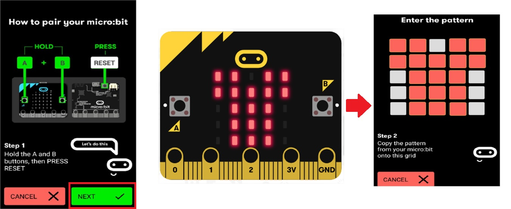
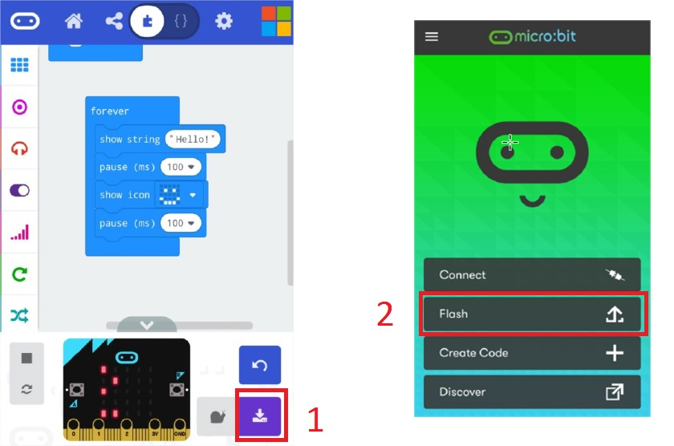

Para programar nuestra tarjeta Micro:bit se puede hacer utilizando un cable USB, o bien, por Bluetooth.
Si optamos por programar en esta última opción, a continuación, se ofrecen los pasos que hay que seguir para hacerlo posible:
1.- Instalar la App de Micro:bit.
Si dispone de Android en nuestro smartphone o tablet, accederemos a Play Store y buscaremos la app de Micro:bit.
App Micro:bit en Play Store

Fuente Propia. Microbit en Play Store (CC0)
Si disponemos de un iPhone, buscaremos en iTunes la app de Micro:bit:

Fuente Propia. Microbit en iTunes (CC0)
2.- Abrir App y sincronizar.
Para poder sincronizar nuestro smartphone con la tarjeta Micro:bit, tenemos que abrir la aplicación y pulsar sobre el botón u opción "Connect".
Tras esto se mostrará una pantalla como la que se ve a continuación:

Fuente Propia. Sincronizar app con Microbit (CC0)
Tras esta operación, nos aparecerá una nueva pantalla donde tendremos que pulsar la opción "Pair a new micro:bit".
Después se nos indicará que pulsemos al mismo tiempo los pulsadores A + B + Reset, mostrándonos la placa Micro:bit un patrón.

Fuente Propia. Introducir patrón de microbit (CC0)
Introducimos en la app de nuestro dispositivo digital el patrón que nos ha mostrado la tarjeta, marcando sobre los cuadros grises.
Una vez que reconozca que el patrón es idéntico al mostrado por la tarjeta se establecerá la sincronización.
3.- Enviar Programa.
Pulsamos, en la pantalla principal de la aplicación, "Create Code" y, después, "Let`s Code" de editor Makecode, mostrándonos en pantalla el programa.
O bien, realizamos el programa en nuestro dispositivo.
Pulsar la opción "Guardar" - "Flash" y se activará el proceso de envío.
Inmediatamente se ejecutará en nuestra tarjeta Micro:bit.

Fuente Propia. Transferir Programa a Micro:bit (CC0)